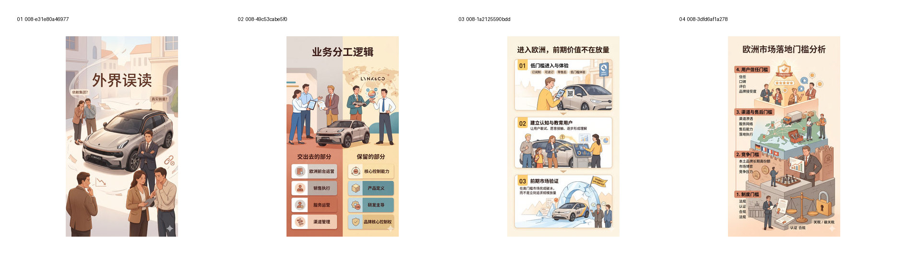
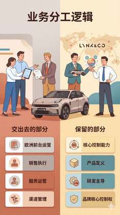
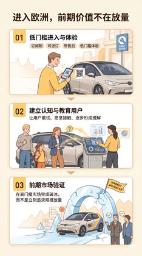
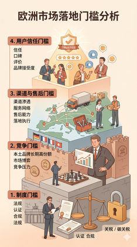

验证 W-accent 是否能成为主题叙事 / 入口位增强线。
Evidence: references/text2pic/conversations/008-Branch-2-V1视觉系统设计/IMAGE_MANIFEST.md § 2. 测试目的 + 4. 用户具体评价及规则影响

562fbb197388673d…

b878be383fdb588f…

e5e033382daf0a11…

e3e133aacc6b18e4…